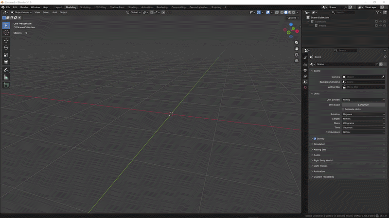

Installazione
Questa pagina spiega come installare ScanReady in Blender.
Scarica l'addon
Scarica il file dell'estensione:
scanready_v1_0_0.zip
Non estrarre lo ZIP.
Blender installa le estensioni direttamente dal file .zip.
Installa l'addon
- Apri Blender.
- Vai su Edit > Preferences.
- Apri la sezione Get Extensions o Add-ons, in base alla versione di Blender.
- Clicca Install from Disk.
- Seleziona
scanready_v1_0_0.zip. - Abilita ScanReady.

Abilita l'addon
Dopo l'installazione, assicurati che ScanReady sia attivo.
Nelle preferenze di Blender dovresti vedere:
- Name: ScanReady
- Type: Extension
- Version: 1.0.0 o successiva
- Maintainer: Mario Schiano
Apri il pannello ScanReady
Nel 3D Viewport:
- Premi
Nper aprire la sidebar. - Apri la scheda Scan Ready.
- Seleziona una mesh high-poly.
- Premi ONE CLICK BAKE oppure usa il workflow manuale.
Aggiornamenti
Gli aggiornamenti vengono gestiti tramite il sistema Blender Extensions.
Quando sarà disponibile una nuova versione, ScanReady potrà mostrare l'avviso di aggiornamento nel pannello dell'addon. In Edit > Preferences > Add-ons > ScanReady trovi anche link rapidi alla documentazione, alle release notes e ai tutorial.
Se il pannello non appare
Controlla che:
- l'addon sia abilitato nelle preferenze;
- il file installato sia lo ZIP dell'estensione;
- Blender sia stato riavviato dopo l'installazione;
- stai guardando la sidebar del 3D Viewport, non un altro editor.
Consulta anche le pagine FAQ e Risoluzione problemi per trovare le soluzioni più comuni.
Per problemi di installazione: